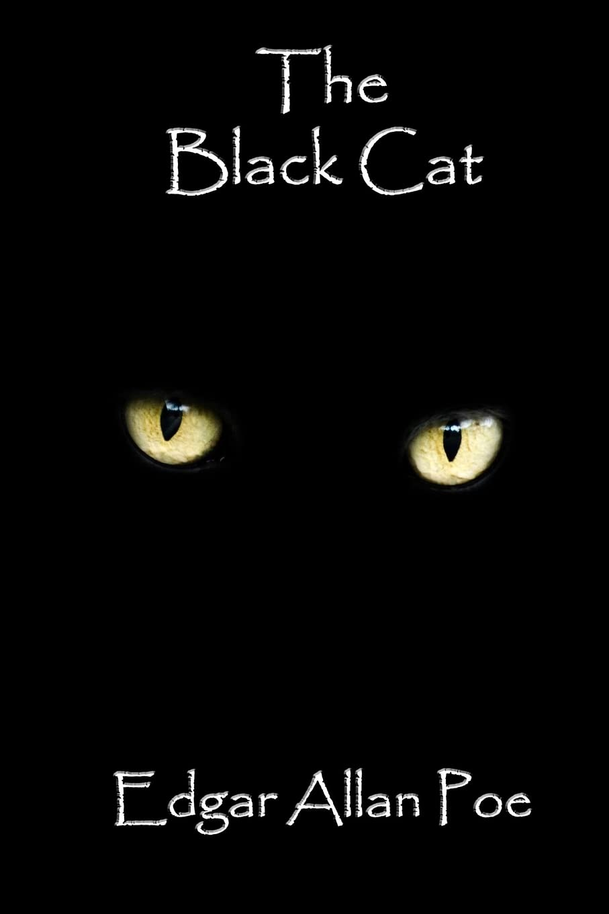
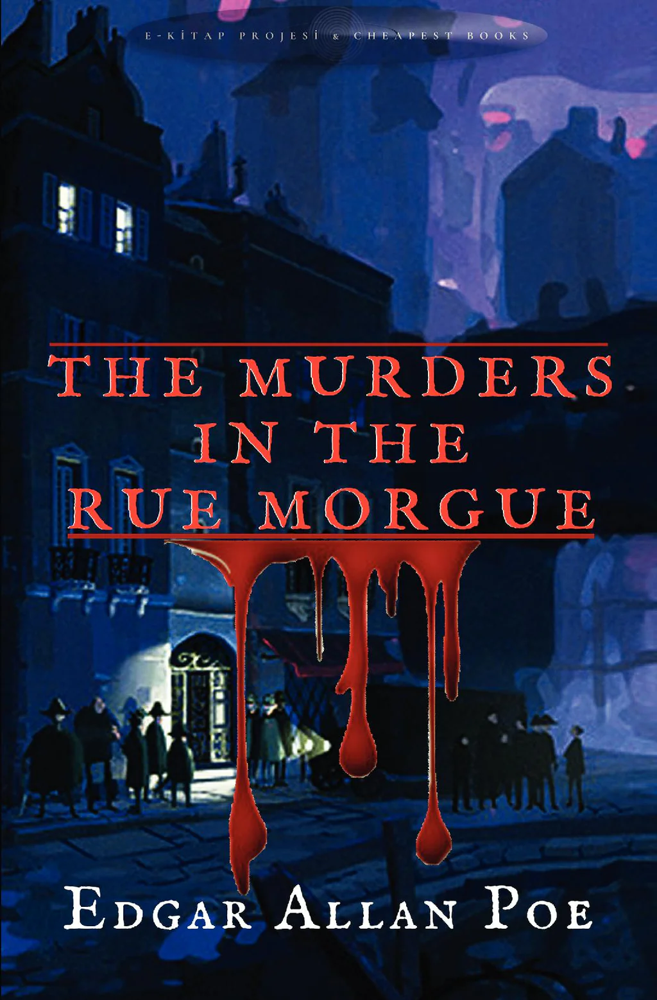

Edgar Allan Poe wrote from the inside of suffering. His tales of
obsession, paranoia, grief, and psychological collapse were not merely
Gothic exercises in entertainment — they were dispatches from a mind
under siege. Born in 1809 and dead by 1849 under circumstances still
debated today, Poe lived a life marked by devastating loss, poverty,
addiction, and emotional instability. What makes him remarkable is not
just that he suffered, but that he transmuted that suffering into
literature so psychologically precise that it reads, nearly two
centuries later, like a diagnostic manual written in verse and blood.
Poe's work sits at a unique crossroads: it reflects the limited mental
health understanding of his era while simultaneously anticipating the
psychological language we use today. To read Poe through a modern lens
is to discover that he understood the human mind's capacity for
self-destruction with an intimacy that still startles.


Poe struggled profoundly throughout his life with alcoholism, depression, and what many scholars believe was a form of bipolar disorder or severe anxiety. The repeated losses he endured — his mother, his foster mother, and later his young wife Virginia — compounded his psychological instability. These torments were not separate from his writing; they were his writing, bleeding directly onto the page in the form of guilt-ridden narrators, paranoia, and obsession with death.
Poe presents his central theme through the slow psychological unraveling of an unreliable narrator who descends from a loving pet owner into a violent murderer. The theme is not simply "guilt" — it is the idea that humans are driven to do what they know is wrong, what Poe calls "the spirit of PERVERSENESS." He frames this as a fundamental flaw in the human soul: "Who has not, a hundred times, found himself committing a vile or silly action for no other reason than because he knows he should not?" The black cat, Pluto, functions as a mirror of the narrator's own conscience. After blinding and hanging the cat, the narrator is haunted by its replacement — a second cat with a white mark that gradually takes the shape of the gallows, a symbol of his inevitable punishment. Poe uses this gothic symbolism to show how guilt physically manifests and pursues the guilty. The narrator's frantic walling up of his wife's body — and the cat's cry from behind the wall — is one of literature's most chilling depictions of a mind betrayed by its own crimes. Poe's message is deeply psychological: he suggests that the human capacity for self-destruction is not external but internal and inescapable. Reflecting his own battles with alcoholism and erratic behavior, the story reads almost as a confession — a man who loves, destroys, and cannot explain why.

While "The Black Cat" surrenders to irrationality, The Murders in the Rue Morgue celebrates its opposite. Poe presents the theme of analytical reasoning as a near-superhuman gift through his detective C. Auguste Dupin, widely regarded as the world's first fictional detective. The story opens with a meditation on the analytical mind itself: Dupin is described as possessing a mind that can untangle the most baffling of problems through pure, cold logic. The brutal double murder of Madame L'Espanaye and her daughter — a crime the Paris police find completely inexplicable — is solved not through physical evidence alone, but through Dupin's careful elimination of the impossible. His deduction that the killer was an Ourang-Outang (an escaped orangutan) is reached by analyzing witness testimonies about a voice that spoke no recognizable human language. "The Frenchman...heard a voice...shrill...the Spaniard...heard a voice...harsh." No witness could identify the language — because it was not a language at all. Poe's message here stands in fascinating contrast to his darker works. He seems to argue that chaos and horror are solvable — that the universe, no matter how grotesque, yields to reason if the mind is disciplined enough. This may reflect Poe's own longing for control over a life that felt perpetually disordered. Dupin is the self Poe perhaps wished he could be: calm, detached, and masterfully in command of an irrational world.


When Poe wrote both stories in the early 1840s, America was a society without psychological language, forensic science, or institutional systems for addressing either crime or mental illness. The Black Cat emerged during the height of the temperance movement, where alcoholism was viewed purely as a moral failing rather than a medical condition — there were no rehabilitation centers, no therapists, and no framework for understanding how substances rewire human behavior. Domestic violence was a private matter, invisible to the law. Similarly, when The Murders in the Rue Morgue was published, organized criminal investigation barely existed. There were no fingerprint databases, no forensic labs, and no professional detectives. Crime-solving was blunt, reactive, and largely dependent on confession or luck. Today, both of these worlds have transformed dramatically. Alcohol Use Disorder is now classified as a legitimate brain disorder, and we understand scientifically how substances erode impulse control and warp behavior. Domestic violence legislation, crisis hotlines, and survivor support systems — while still imperfect — exist on a scale Poe's era couldn't have imagined. On the other side, criminal investigation has become a sophisticated, multidisciplinary science: DNA analysis, behavioral profiling, digital forensics, and psychological criminology have all made Dupin's dream of reason-based detection a very real institution.
The most haunting similarity across both stories is how little human nature itself has changed. The narrator of The Black Cat minimizes, blame-shifts, and genuinely convinces himself he was once a good man — a pattern that modern psychology now labels with clinical precision, but which plays out in domestic abuse cases every single day. Poe's concept of perverseness — the irrational drive to destroy what one loves — maps almost directly onto what modern behavioral science calls compulsive self-sabotage and addiction-driven decision-making. He didn't have the vocabulary of dopamine or the prefrontal cortex, but he described their consequences with unsettling accuracy. Likewise, Dupin's core method in Rue Morgue — stripping away assumption, following evidence to its logical conclusion no matter how strange, and exposing the failures of institutions too proud to admit confusion — is essentially what modern forensic investigators and criminal profilers are trained to do. The thinking Poe imagined hasn't just survived; it became the foundation of an entire profession. The key difference lies in accountability and visibility. In Poe's world, the abuser in The Black Cat could realistically expect to never face consequences — the system simply wasn't designed to look. And in Rue Morgue, the police are portrayed as almost comically incompetent, entirely dependent on a lone private genius to make sense of chaos. Today, forensic science, surveillance, digital records, and legal frameworks have made both impunity and investigative ignorance far harder to sustain — though certainly not impossible.
Together, these two stories capture the two great tensions that modern society is still actively wrestling with: the terrifying pull of our own self-destructive impulses, and the redemptive but fragile power of reason to impose order on chaos. The Black Cat is still relevant because cycles of abuse, addiction, and self-deception have not gone away — they have simply been renamed and better documented. In an era shaped by movements like #MeToo and growing public conversation around accountability, Poe's choice to tell the story from inside the abuser's mind remains deeply provocative. It doesn't excuse the narrator, but it refuses to make him a simple monster, forcing readers to confront how ordinary the psychology of destruction can be. The Murders in the Rue Morgue speaks just as powerfully to a world increasingly reliant on data, logic, and analytical systems — while simultaneously watching those systems fail or be manipulated. Dupin's warning that institutions can be confidently wrong feels remarkably current in an age of wrongful convictions, forensic evidence misuse, and debates over algorithmic bias in criminal justice. Poe, writing in the 1840s with no scientific framework and no institutional support, essentially looked into the human condition and described two things we are still arguing about today: why we destroy ourselves, and whether reason is enough to save us.